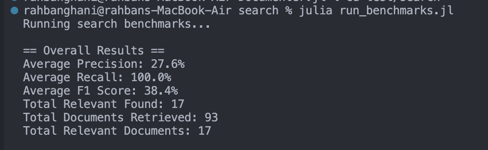
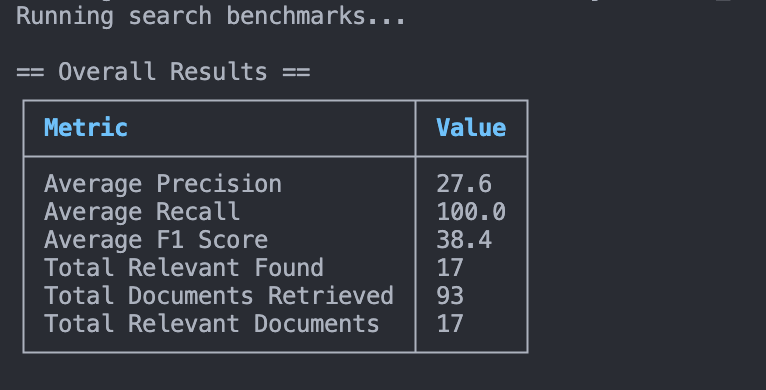

Adding Search Benchmarks
We had our first meeting, and we discussed what would be the flow of the entire internshiop and also discussed how to go about the first deliverable as per the proposal which is Adding Search Benchmarks.
We discussed what should be the language of choice for writing scripts for benchmarking, we had two possible candidates, one was Julia (for obvious reasons, since the whole repo is in Julia) and the other one was JavaScript since the search functionality is implemented in JavaScript so it would be easier to interact with the search functionality.
We talked about it and thought of JavaScript as a better choice but now I think of it, I belive the barebone architecture for benchmarks should be in Julia only so that in future if anybody want to add more benchmarks or new tests they can do it easily as I am expecting most of the people coming in the Documenter repo are coming from Julia background and as far as interacting to the JavaScript based search functionality we can see how to do it through Julia in coming days.
Creating query structure
First we'll create a new directory in test folder, I have named it search. Inside it I have created the first file named test_queries.jl
The file structure look like this :
test/
├─search/
│ └─test_queries.jl
...I started with creating a basic struct which stores the search query and what should be the expected docs in the following manner :
struct TestQuery
query::String
expected_docs::Vector{String}
endwe can then compare it with the actual result and find out the different benchmarks.
Now we can create different groups of queries like basic queries or queries specific to Julia syntax and if anybody from the community want to test some queries specific to their usecase, they can do it easily. We can then use them all together using something like vcat which will concatenate all the arrays into one
Evaluation
For now, I am using three metrics for calculating benchmarks namely :
- Precision
- measures how many of the returned results are relevant.
- Example: if you returned 5 docs, out of which 3 are relevant, precision = 3/5 = 0.6.
- Recall
- measures how many of the true relevant documents were found in the result.
- Example: if there were 4 relevant docs and you returned 3 of them, recall = 3/4 = 0.75.
- F1 Score
- harmonic mean of precision and recall.
- this balances precision and recall in a single number.
\[F_1 = 2 \times \frac{\text{precision} \times \text{recall}}{\text{precision} + \text{recall}}\]
Helper functions
Now let's create a function that evaluate all these metrics for a single query
It'll look something like this :
function evaluate_query(search_function, query::TestQuery)
results = search_function(query.query)
precision = calculate_precision(results, query.expected_docs)
recall = calculate_recall(results, query.expected_docs)
f1 = calculate_f1(precision, recall)
return Dict(
"query" => query.query,
"precision" => precision,
"recall" => recall,
"f1" => f1,
"expected" => query.expected_docs,
"actual" => results
)
endThis will return a dictionary that have all the relevant results. We still have to create the search function that will search the query in our actual search implementation.
This looks good, now we need to create a function that evaluate all metrics for a suite of queries, which would essentially be calling the evaluate_query function for array of queries, and then calculating the mean of all results for each metric and return a dictionary similar to evaluate_query function
It look something like this :
function evaluate_all(search_function, queries)
results = [evaluate_query(search_function, q) for q in queries]
avg_precision = mean([r["precision"] for r in results])
avg_recall = mean([r["recall"] for r in results])
avg_f1 = mean([r["f1"] for r in results])
return Dict(
"individual_results" => results,
"average_precision" => avg_precision,
"average_recall" => avg_recall,
"average_f1_score" => avg_f1
)
endThe Meeting #2
We had our weekly meeting and there were few suggested edits which we are going to implement :
- use struct instead of dictionary to return the search results.
- just display the overall result in the terminal and rest all of the detailed results should be written in a text file.
- the returning struct should also contain integers like
total_documents_retrieved, total_relevant_foundalong with float. - Write short, descriptive comments explain the code
- my mentors has advised me to open a pr, so that other people can see and give their suggestions on the work done till now how here the open pr link : PR Link
We have now created this struct for a single search query
struct QueryResult
query::String
precision::Float64
recall::Float64
f1::Float64
expected::Vector{String}
actual::Vector{String}
# Raw integer values used in calculations
relevant_count::Int # Number of relevant documents found
total_retrieved::Int # Total number of documents retrieved
total_relevant::Int # Total number of relevant documents
endand one for multiple search queries
struct EvaluationResults
individual_results::Vector{QueryResult}
average_precision::Float64
average_recall::Float64
average_f1_score::Float64
# Raw integer values for overall evaluation
total_relevant_found::Int # Total number of relevant documents found across all queries
total_documents_retrieved::Int # Total number of documents retrieved across all queries
total_relevant_documents::Int # Total number of relevant documents across all queries
endalso I have done relevant changes to the previously made functions and now from each function we are returning values with the struct only, much more robust!
Printing the Benchmarks
we are writing the overall results in the cli and the detailed results are written in a file which would be named : searchbenchmarkresultsyyyy-mm-ddHH-MM-SS.txt, where the placeholders will be filled by the date and time when that file was build.
right now we are just displaying it as it is but my maintainer has suggested to use a Julia package named PrettyTables.jl
right now this is how the results in CLI are looking

we can definitely make it prettier using PrettyTable.jl
and now after using the PrettyTable.jl package, it is looking like this :

Looking much better! (IMO Obviously)
Imitating the Search
Now since we want to search for the query and compare it with the expected result we want to imitate the search functionality originally implemented in the Documenter which uses the minisearch engine
so the steps would look like :
- Loading the search index
- Install the minisearch using npm
- Writing the js code to use the minisearch engine
- Run the code
- Return the results as actual docs for comparison with expected docs
Let's start with loading the search index. Now we have thought of multiple ways of going about this, the main challenge was where should we get the search index from, our options are :
- using the search index built during the test process :
search_index_path = joinpath(@__DIR__, "../examples/builds/html/search_index.js")- using the actual search index built during the build process of the Documenter documentation
search_index_path = joinpath(@__DIR__, "../../docs/build/search_index.js")I have gone with the later, since if we use the search index that is used in production we can do more thorugh testing
so the whole function now look like this :
# Load the real search index from test examples (already built!)
function load_real_search_index()
# Use the example search index that's already built and tested
search_index_path = joinpath(@__DIR__, "../../docs/build/search_index.js")
if !isfile(search_index_path)
error("Search index not found at: $search_index_path")
end
# Read and parse the JavaScript file
content = read(search_index_path, String)
# Find the JSON data after "var documenterSearchIndex = "
json_start = findfirst("var documenterSearchIndex = ", content)
if json_start === nothing
error("Invalid search index format: missing variable declaration")
end
# Extract JSON content (everything after the variable declaration)
json_content = content[(last(json_start) + 1):end]
# Parse the JSON
parsed = JSON.parse(json_content)
return parsed["docs"] # Return just the docs array
endif the file doesn't exist we throw an error, else we read the file using the read function available in Julia, now the search index file has structure like this :
var documenterSearchIndex = {"docs":[{"location":"linenumbers/#@repl,-@example,-and-@eval-have-correct-LineNumberNodes-inserted","page":"@repl, @example, and @eval have correct LineNumberNodes inserted"...}]so we access the search index by removing the var documenterSearchIndex = part by storing its last index and we store everything after that in json_content array, then we parse it using JSON.parse and from it return the value of parsed["docs"] to finally get the complete search index in JSON format.
Now we'll install the minisearch using npm for this we just did created a package.json and added minisearch as a dependency, here a little hiccup came since I initially used ^6.1.0 for the version but my mentors advised to use the exact version which is getting used in the Documenter which is 6.1.0 so I fixed it, here's what the package.json looks like:
{
"name": "documenter-search-benchmark",
"version": "1.0.0",
"description": "Search benchmarking for Documenter.jl",
"dependencies": {
"minisearch": "^6.1.0"
}
}next step, we'll be writing the JS code to use the minisearch engine Now my initial thought would be that this is a piece of cake, just call the search functionality already implemented in assets/html/js/search.js and we are good to go but what I didn't realize is that they both have different execution environments, the original search functionality is designed for the browser, where ours is a Julia script, it runs in a command line environment using Node.js as a subprocess to execute JavaScript. so now we have two options :
- Replicate the core logic
- Pros : no new dependence
- Cons : Violates DRY
- Isolate the pure search logic in another file and then call it in both the places
assets/html/js/search.jsandtest/search/real_search.jl- Pros : Obeys the DRY principle
- Cons : have to add a new build tool to a primarily Julia project
I did gave a try to the second option but finally I have gone with the first approach as it is more simple and since it is primarily a Julia project I don't want to add unnecessary JS dependencies in it.
so initially I created a string only with all the JS code and named it wrapper_js and just read it, but that end up becoming a very big string so my mentor suggested to have a seperate .js file and read it from there so we are doing that and injecting data using placeholders so now we don't have to spin the full browser to test the search functionality, which would be much slower